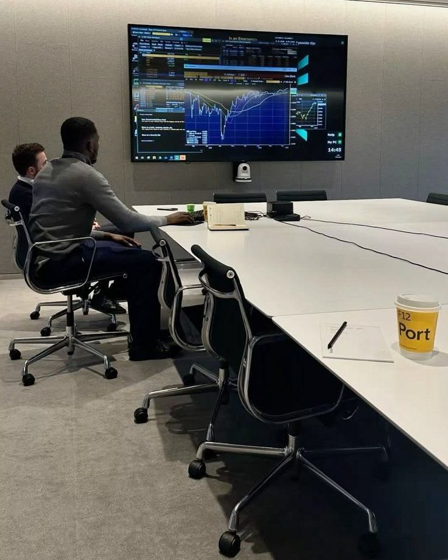

Sistema comercial para empresas B2B
Diagnóstico, processo, treino da equipa e acompanhamento num só sistema, o Sales Operating System, para vender com previsibilidade.
Deixe os dados e envie por WhatsApp. Respondemos para combinar o primeiro passo.
Pedir diagnósticoO que fazemos
Quando o comercial depende de pessoas e não de um processo, o crescimento tem um teto. Construímos o sistema que remove esse teto.
Ouvimos cada pessoa da equipa e analisamos os dados para saber onde as vendas se perdem.
Saber maisFunções, metas, processo comercial, regras de registo e painel de indicadores.
Saber maisReunião mensal, relatório de indicadores e plano de ação para manter os resultados.
Saber maisImpacto
Cada fase termina numa entrega concreta, e cada resultado fica visível num painel que a direção consegue ler.

Diagnóstico por videochamada ou presencial
Como funciona
Cada fase tem uma entrega clara. No fim da primeira, a decisão de avançar é sua.
Ouvimos cada pessoa da equipa, online ou presencialmente, e analisamos os dados de vendas.
O que recebe
Relatório dos problemas, as causas e a rota para os resolver, apresentados numa reunião.
Definimos com o decisor e o líder as funções, as metas, o processo comercial e as regras de registo.
O que recebe
Playbook comercial, rotina de gestão e painel de indicadores.
Cada pessoa treina na sua função, com sessões ao vivo, exercícios e tarefas reais registadas.
O que recebe
Equipa treinada e avaliada, com material de apoio por função.
A equipa passa a executar sozinha, com os indicadores a correr.
O que recebe
Revisão final, plano de manutenção e passagem para o acompanhamento.
Serviços
Depois do diagnóstico, escolhemos juntos o que faz mais sentido para a sua operação.
Implementação executada pela sua própria equipa, com a nossa orientação.
Para quem é
Empresas com equipa comercial que querem executar com as suas pessoas.
O que inclui
O que fica de fora
Tudo do SOS Equipa, com inteligência artificial a tratar da prospeção e do seguimento.
Para quem é
Empresas que querem velocidade e menos trabalho manual na prospeção.
O que inclui
O que fica de fora
Mantém o sistema vivo depois da implementação.
Para quem é
Quem concluiu o SOS e quer manter e melhorar os resultados.
O que inclui
O que fica de fora
O investimento é apresentado depois da conversa inicial. Os resultados dependem também do mercado, da oferta e da execução da equipa.
O que recebe
Tudo o que construímos fica consigo, documentado e pronto para a equipa usar.
As seis áreas analisadas, com notas, evidências e causas.
Resultados, funil e atividade, sempre separados.
Processo por etapas, com critérios para avançar.
Do SDR ao diretor comercial, com plano de aula.
Reuniões semanais e revisão mensal estruturadas.
Cálculo do que é preciso para atingir a meta.
Para quem é
Sobre nós
Comecei no digital só para ganhar dinheiro. Pelo caminho, descobri que gosto de resolver problemas. Vi empresários a sofrer por falta de previsibilidade e famílias sem a presença dos pais, consumidos por uma vida inteira de emprego, e decidi ajudar.
Sou o criador da metodologia ESO-B2B, já treinei 15 vendedores e empresários e lidero a Growth Sales. Faço pessoalmente o diagnóstico e a estratégia de cada cliente. A implementação é feita por uma equipa de especialistas em treino de equipas e em automação com IA, com gestão de clientes e da qualidade da entrega.
O método assenta em obras de referência de vendas B2B, como Spin Selling, A Venda Desafiadora e $100M Offers, adaptadas à realidade de cada empresa.
A equipa
O método e o diagnóstico são do fundador. A entrega é feita por especialistas, com um padrão documentado e qualidade verificada em cada fase.
Lidera o diagnóstico e a estratégia, e decide os casos críticos de cada cliente.
Executam o treino da equipa do SOS Equipa, com o kit e os planos de aula da Growth Sales.
Implementam o SOS Inteligente: pesquisa e qualificação de contas, agendamento e follow-up.
O seu ponto único de contacto, do arranque ao acompanhamento mensal.
Controla prazos e verifica a qualidade de cada fase antes de a apresentar.
Perguntas frequentes
O diagnóstico e a estratégia são conduzidos por Antônio Congo. O treino e a automação com IA são executados por especialistas da Growth Sales, e há uma pessoa responsável por cada cliente e outra pela qualidade da entrega.
Não prometemos números. Prometemos o que controlamos: processo estruturado, equipa treinada, rotina de gestão e indicadores fiáveis, para que as vendas sejam mais previsíveis. O resultado depende também do mercado, da oferta, dos preços e da concorrência.
Não. Podemos construir a operação de raiz ou melhorar uma que já existe. O percurso adapta-se à fase em que a empresa está.
O diagnóstico leva 12 dias. O treino da equipa dura 90 dias e a implementação do SOS Inteligente, 60 dias. As restantes durações combinam-se depois do diagnóstico.
O investimento depende do serviço e é apresentado depois da conversa inicial. A entrada cobre o diagnóstico e o restante é pago em parcelas ligadas às fases.
Os dois. O diagnóstico pode ser por videochamada ou presencial, conforme a empresa preferir. O treino é online por defeito, com momentos presenciais opcionais.
Não. Recebe o relatório e a rota, e decide se avança. Arrisca apenas a entrada.
É um risco comum, por isso ouvimos cada pessoa no diagnóstico, ligamos o treino ao dia a dia de cada função e envolvemos o líder desde o início.
Inscrição
Preencha os dados. Ao enviar, abrimos o seu WhatsApp ou e-mail com a mensagem pronta, e respondemos para combinar o primeiro passo.
Usamos os seus dados apenas para responder a este pedido. Nenhuma informação é publicada.